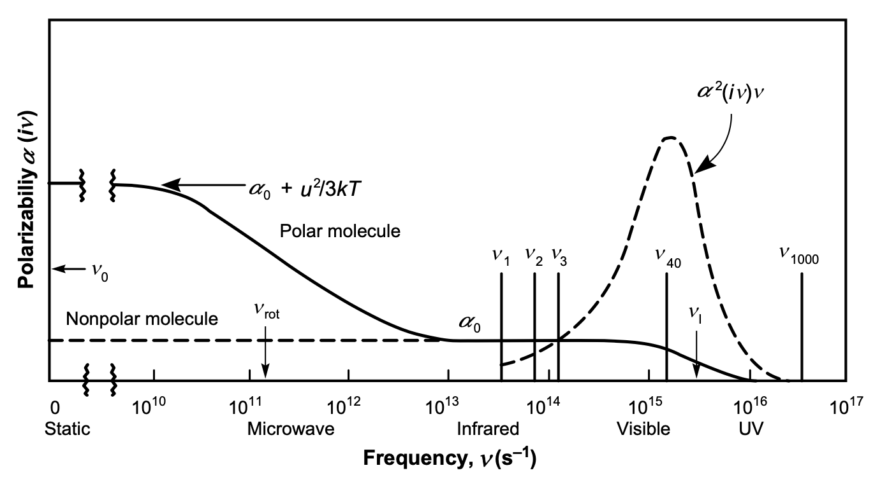

This page was generated from notebooks/L10/1_van_der_Waals.ipynb.

van der Waals Interactions#
So far we have considered electrostatic forces between charged and dipolar molecules. We have also introduced interactions which rely on the polarizability of molecules, either just the electronic polarizbility or also an orientational polarization of dipolar molecules.
A part of these interactions showed a specific distance dependence, which was \(r^{-6}\). In particular, we identified the Keesom interaction, i.e. the interaction of two freely rotating dipoles as well as the Debye interaction, i.e. the interaction of an induced dipole with a permanent dipole as two parts of the so-called van der Waals interaction.
Yet there also interaction between non-charged and non-polar molecules and this interaction is also belonging to this class and is specifically called dispersion interaction or London interaction.
As compared to other interactions, van der Waals interactions are typically
long range
attractive and orienting
not additive
[150]:
import numpy as np
import matplotlib.pyplot as plt
from numpy.linalg import norm
from scipy.constants import c,epsilon_0,e,physical_constants
import json
%config InlineBackend.figure_format = 'retina'
with open('style.json', 'r') as fp:
style = json.load(fp)
plt.rcParams.update(style)
Dispersion Interaction#
The dispersion part in particular, will require a quantum electrodynamic approach, which is beyond the scope of this lecture. We will will consider a much simpler approach at the beginning and later study the more general approach by McLachlan.
Consider first two atoms which have
no time averaged dipole
no residual charge
Depite this fact, the atoms may have an instantaneous dipole, which is causing and induced dipole in the other atom. Similarly, the second atom may cause a corresponding dipole in the first atom as well. This will effectively lead to an attractive interaction, which carries the spirit of the dispersion interaction. We can put that into a simple and very crude model based on the most basic semi-classical description of an atom.
This atom may consist of an electron and proton, which are separated by a distance \(a_0\), which corresponds to the Bohr radius. In this atom, the Coulomb interaction is given by
\begin{equation} E_{\rm pot}=\frac{e^2}{4\pi \epsilon_0 a_0} \end{equation}
This potential energy corresponds for an hydrogen atom to the ionization potential \(I=13.6\) eV. To ionize the atom, we can use electromagnetic radiation of the frequency \(\nu=3.3\times 10 ^{15}\) s\(^{-1}\). Thus, in principle a photon of energy \(h\nu=2.2\times 10^{-18}\) J would be sufficient to ionize the atom.
Accordingly, we have
or we can write, that the Bohr radius of the electron orbit is given by
.
In this simple classical picture the atom has an instantaneous dipole which corresponds to \(u=a_0 e\). This dipole creates a dipole field, that induces a dipole in the second atom. Using our previous findings for the dipole - induced dipole interaction yields
\begin{equation} w(r)=-\frac{u^2 \alpha_0}{(4\pi \epsilon_0)^2 r^6}=-\frac{(a_0 e)^2 \alpha_0}{(4\pi \epsilon_0)^2 r^6} \end{equation}
where \(\alpha_0\) is the electronic polarizability \(\alpha_0=4\pi \epsilon_0 a_0^3\). The latter gives
from which we finally find the interaction energy
or
This simple semi-classical description corresponds to the result London (up to a factor of 3/4) obtained with a quantum-mechanical pertubation theory, which is
\begin{equation} w(r)=-\frac{C_{\rm disp}}{r^6}=-\frac{3}{4}\frac{\alpha_0^2 h\nu}{(4\pi \epsilon_0)^2 r^6}=-\frac{3}{4}\frac{\alpha_0^2I}{(4\pi \epsilon_0)^2 r^6} \end{equation}
So far, we assumed that both molecules have the same polarizability and thus are of the same type. If this is not the case, the interaction energy is given by
\begin{equation} w(r)=-\frac{3}{2}\frac{\alpha_{01},\alpha_{02}}{(4\pi \epsilon_0)^2 r^6}\frac{I_1 I_2}{I_1+I_2} \end{equation}
Example: Estimating the Boiling Point of Noble Gases
We can use this formula for the dispersion energy to estimate the boiling point of noble gases.
\begin{equation} w(r)+E_{\mathrm{kin}}=-\frac{3 \alpha_{0}^{2}}{4\left(4 \pi \epsilon_{0}\right)^{2} \sigma^{6}} h v_{\mathrm{I}}+\frac{3}{2} k_{\mathrm{B}} T_{\mathrm{m}}=0 \end{equation}
For Neon and Argon for example, we have the following parameters:
Ne: \(\sigma=3.08\) Angstroem, \(h\nu_I=21.6\) eV, \(\frac{\alpha_0}{4\pi \epsilon_0}=0.39\times 10^{-30}\) m\(^{-3}\), from which we obtain a boiling temperature of \(T_{\rm b}=22\) K, which nicely corresponds to the experimental value of \(T_{\rm b}=27\) K
Ar: \(\sigma=3.76\) Angstroem, \(h\nu_I=15.8\) eV, \(\frac{\alpha_0}{4\pi \epsilon_0}=1.63\times 10^{-30}\) m\(^{-3}\), from which we obtain a boiling temperature of \(T_{\rm b}=85\) K, which nicely corresponds to the experimental value of \(T_{\rm b}=87\) K

While the theory above provides us only with some idea about the disperion interaction, we can now summarize all three controbution to the van der Waals interaction
\begin{equation} w_{\rm vdW}(r)=-\underbrace{\frac{u_{1}^{2} u_{2}^{2}}{3 k_{\mathrm{B}} T\left(4 \pi \epsilon_{0} \right)^{2} r^{6}}}_{\text {Keesom }}-\underbrace{\frac{u_{1}^{2} \alpha_{02}+u_{2}^{2} \alpha_{01}}{\left(4 \pi \epsilon_{0} \right)^{2} r^{6}}}_{\text {Debye }}-\underbrace{\frac{3 h\nu_1\nu_2 \alpha_{01} \alpha_{02}}{\left(4 \pi \epsilon_{0} \right)^{2} 2(\nu_1+\nu_2)r^{6}}}_{\text {London} } \end{equation}
or simply
\begin{equation} w_{\rm vdW}(r)=-\frac{C_{\rm vdW}}{r^6}=-\frac{C_{\rm Debye}+C_{\rm Keesom}+C_{\rm disp}}{r^6} \end{equation}
The individual contributions have different strength, but it is not difficult to see that the dispersion interaction is typically the biggest one as shown in the table below. The reason for that is the ionization potential and we will address this issue later in the section of the McLachlan theory.

McLachlan Theory#
The first complete theory for the vdW interaction involving 2 atoms in a medium, was proposed by McLachlan, which is expressed as
\begin{equation} w_{\mathrm{vdW}}(r)=-\frac{6 k_{\mathrm{B}} T}{\left(4 \pi \epsilon_{0}\right)^{2} r^{6}} \sum_{n=0}^{\infty}{}^{\prime} \frac{\alpha_{1}\left(i v_{n}\right) \alpha_{2}\left(i v_{n}\right)}{\epsilon_{3}^{2}\left(i v_{n}\right)} \end{equation}
The \(\sum^{\prime}\) notation denotes that the first term in the summation is multiplied by \(1/2\). The frequencies are sampled, only at discreet values that \(h v_{n}=2 \pi k_{\mathrm{B}} \operatorname{Tn}\) (known as the Matsubara frequencies). The typical \(\alpha(i v)-v\) plots of polar and non-polar molecules using the Lorentz model can be seen in the Figure below.
Frequency Dependent Polarizability#
The electronic polarizability of a single atom can classically be approximated by a damped harmonic oscillator, i.e.
\begin{equation} m_{e}\ddot{x}+\Gamma m_e \dot{x}+m_e \omega_0^2 x=-e E(\omega) \end{equation}
Here \(\omgea_0\) is the resonance frequency, \(m_e\) the electron mass, \(\Gamma\) the damping constant and \(E\) the external electric field. Solving this differential equation and using \(\omega=2\pi \nu\) yields the frequency dependent electronic polarizability
\begin{equation} \alpha(\nu)=\frac{\alpha_0}{1-i\Gamma \frac{\nu}{\nu_0^2}-\left ( \frac{\nu}{\nu_0}\right)^2} \end{equation}
[151]:
def alpha(nu,nu_0,gamma):
return(10/(1-1j*gamma*nu/nu_0**2-(nu/nu_0)**2))
[152]:
nu=np.linspace(1e5,1e17,1000)
[153]:
plt.figure(figsize=(8,5))
nu_0=3.3e15
plt.semilogx(nu,alpha(nu,nu_0,1e15).real,label="real")
plt.semilogx(nu,alpha(nu,nu_0,1e15).imag,label="imag")
plt.semilogx(nu,alpha(1j*nu,nu_0,1e15).real,label=r"$\alpha(i\nu)$")
plt.xlabel(r"frequency $\nu$ [Hz]")
plt.ylabel(r"$\alpha(\nu)$ [a.u.]")
plt.xlim(1e12)
plt.legend()
plt.show()

Zero Frequency Contribution#
At zero frequency, we know that the polarizability reduces to the form of
which results in the first term of the sum
We immediately see the recovery of the Keesom and Debye energies, as well as the \(\alpha_{01} \alpha_{02}\) term from mathematical derivation. In fact, the last part is the zero-frequency part of the dispersion energy. Comparing the magnitudes of \(k_{\mathrm{B}} T\) and \(h v\), we can see that the zero-frequency contribution to the dispersion energy is negligible.
Optical Frequency Contribution#
The lowest legal frequency \(h v_{1}=2 \pi k_{\mathrm{B}} T \approx 0.16 \mathrm{eV}\). The permanent dipoles cannot respond to such high frequency, therefore the dipole polarizability has no effect on the dispersion energy at optical frequencies. The electronic polarizability govern the dispersion energy at such frequencies. We first consider \(\epsilon_{3}=1\), that the 2 molecules are in vacuum.
The summation in the original equation can be estimated using continuous integral at optical frequencies, if temperature is very low. Since \(h \mathrm{~d} \nu=2 \pi k_{\mathrm{B}} T \mathrm{~d} n\), we can rewrite the integral from \(n=1\) to
\begin{equation} w_{\mathrm{vdw}}(\nu>0)=\frac{h}{2 \pi} \frac{6}{\left(4 \pi \epsilon_{0}\right)^{2} r^{6}} \int_{\nu_{1}}^{\infty} \alpha_{1}(i v) \alpha_{2}(i v) \mathrm{d} v \end{equation}
Using the approximate form of the polarizability
and \(\epsilon_3=1\) we end up at
\begin{equation} w(\nu>0, r)=-\frac{3 \alpha_{01} \alpha_{02}}{2\left(4 \pi \epsilon_{0}\right)^{2} r^{6}} \frac{h v_{\mathrm{I} 1} v_{\mathrm{I} 2}}{v_{\mathrm{I} 1}+v_{\mathrm{I} 2}} \end{equation}
which is finally the London form of dispersion energy. Now we know why this interaction is called “dispersion”. The largest contribution to the energy comes from the range where \(v\) is close to \(v_{\mathrm{I}}\). Since \(v_{\mathrm{I}}\) is usually in UV range, such interaction is dominated by the polarizabilities from Vis to UV frequencies. As the polarizability and permittivity are closely related to the dispersion of light, it is not hard to understand why it is originally coined as “dispersion interaction”.